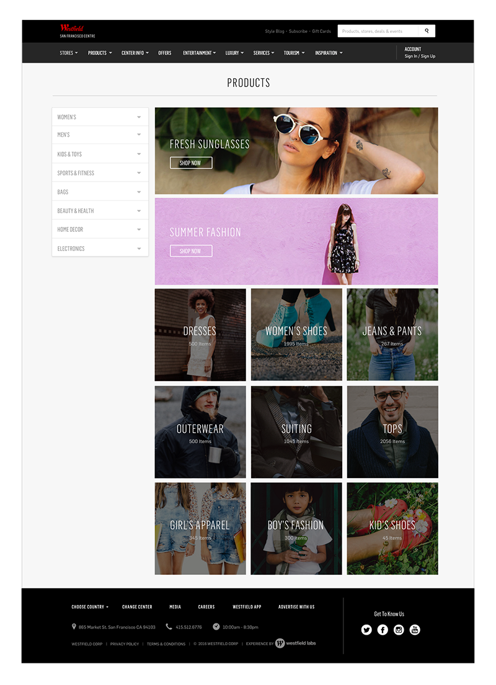

This was a massive redesign of the entire Westfield website to unify the look and feel of all the different Westfield regions which included Australia, UK and the US. My role on this project was lead visual designer working alongside several UX designers which alowed me to be part of the user research process as well. This project involved reworking the Westfield styleguide and incorporating those new guidelines into this new design.
The redesign of this page was meant to be more enticing for users and more brand specific to satisfy the retailer. The idea was to pull brand images from Instagram and have them continuously scrolling slowly on desktop with the ability to click into the images to get a better view. The most important information, which we determined from user research was then put at the top of the page with a bigger and more relevant view of the map.
This page originally had the categories in the left hand navigation open on initial page view, which took up a lot of space on the page and required a lot of scrolling. I redesigned the categories to be closed when landing on this page with arrows indicating that the categories can be opened or closed. Collections were added to the top right of the page to provide some inspiration, and the image categories underneath were meant to help users dive quickly into a category they might be interested in.
I wanted to create a clever 404 page by blending in the 404 number with the other hanger sizes to create somewhat of an Easter Egg on the page. The hangers are empty of clothing as well to indicate that there is "nothing here".
This is some interaction work that I did in After Effects for the Westfield Website to help communicate to developers how the interactions and UX flow should work.